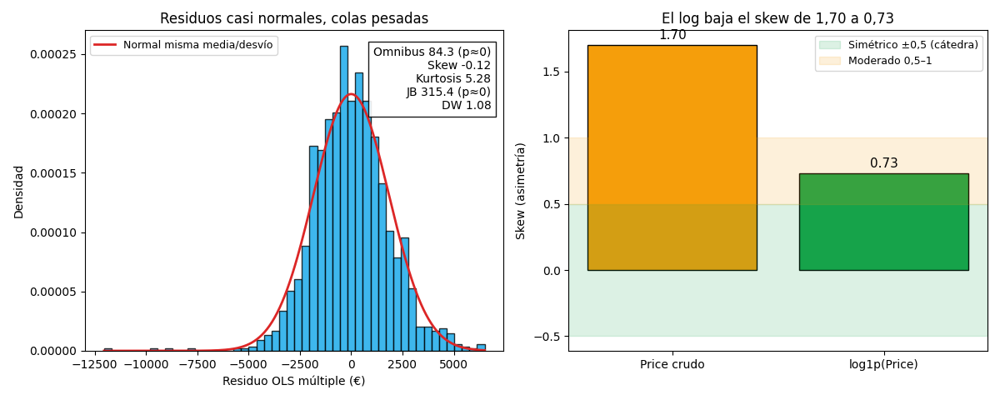
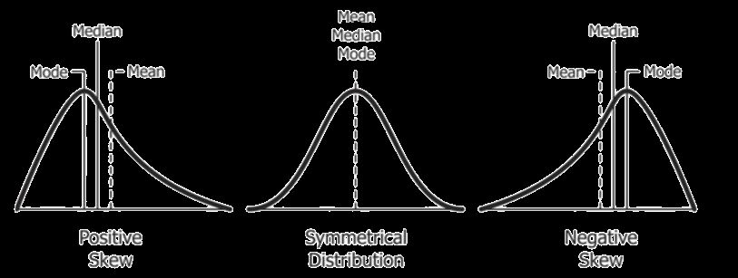
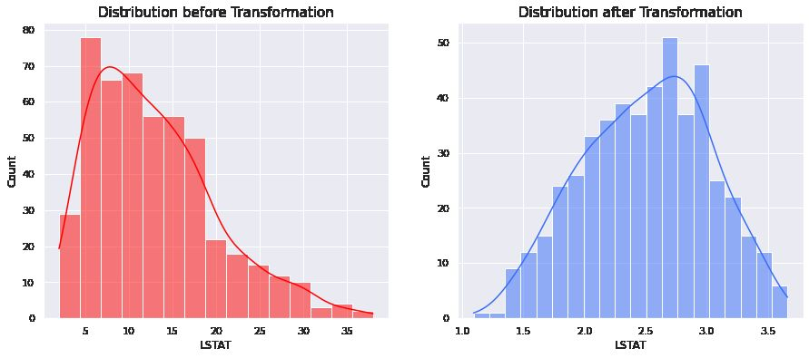
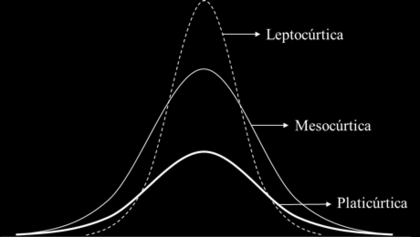
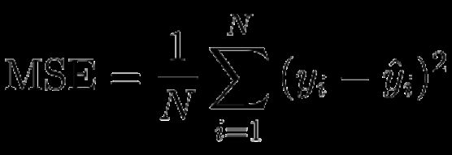
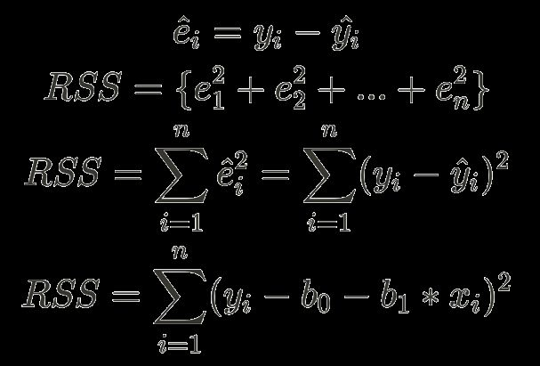
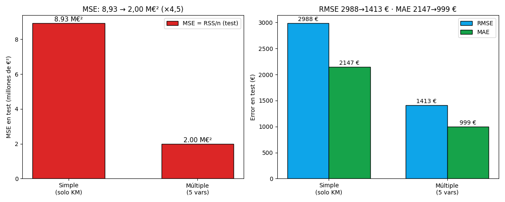

Bloque D · Regresión lineal, selección y regularización · Lección 0048 · mar 15 sep
Tercera parte de la salida: Omnibus, skew, kurtosis, JB + MSE
Win de hoy: leer el pie del summary() del OLS de 9 variables
(lección 0024): Omnibus 84,3 (p ≈ 0),
skew −0,12, kurtosis 5,28, JB 315,4 (p ≈ 0),
DW 1,08 (apenas bajo lo sano; ver 0025) — y cerrar con la tarea de cátedra: análisis de valores residuales +
MSE en test
(≈ 2,00 M€² la múltiple vs ≈ 8,93 M€² la simple).
1 · La tercera parte del summary: ¿los residuos son normales?
El summary() tiene tres pisos: arriba el encabezado (R², F, AIC — la 0024),
en el medio la tabla de coeficientes con t y p (la 0042),
y abajo el pie: los tests de normalidad de residuos. En nuestro OLS de 9 variables sale así:
Omnibus: 84,259 Durbin-Watson: 1,079
Prob(Omnibus): 0,000 Jarque-Bera (JB): 315,422
Skew: -0,122 Prob(JB): 3,2e-69
Kurtosis: 5,283 Cond. No. 2,31e+06Lectura piso por piso. Omnibus prueba normalidad combinando asimetría y kurtosis: cerca de 0 con Prob(Omnibus) cerca de 1 = campana sana. Acá Omnibus 84,3 con p ≈ 0: los tests rechazan normalidad. ¿Pánico? No: con n = 1436 cualquier micro-desvío “rechaza” (la 0025 ya avisó: el gráfico manda, el test obedece). El histograma de la Fig. 1 muestra una campana decente con colas algo pesadas: eso es todo lo que pasa. (Referencia: en clase, con el modelo del profesor, salía Omnibus 163,6, skew 2,07, kurtosis 12,5, JB 1362 y DW 1,98: su modelo estaba mucho más lejos de la campana que el nuestro.)

Regenerar la figura (mismo resultado versionado en assets/img/toyota/):
python scripts/make_figures.py --only salida-tercera-parte-residuales-mse2 · Skew: la simetría (y qué hacer si falta)
El skew (asimetría) mide si la distribución se inclina: 0 = simétrica como la campana, positivo = cola a la derecha (unos pocos autos carísimos estiran), negativo = cola a la izquierda. Nuestros residuos dan −0,12: casi simétricos. La regla de cátedra para juzgarlo:
- −0,5 … +0,5: simétrico, no tocar nada (nuestro −0,12 vive acá).
- 0,5 … 1 (en valor absoluto): sesgo moderado, evaluar tratamiento.
- Más de 1: muy sesgado, tratar sí o sí (Price crudo: 1,70).

¿Por qué importa? El skew degrada la regresión: los valores extremos tiran de la recta y las predicciones empeoran justo donde más duele. (Los árboles, en cambio, son inmunes: cortan por umbrales, no les importa la forma de la distribución.) Tratamientos de clase, uno por línea:
- Log: el clásico; achica la cola derecha (Fig. 1, der.). Ver 0046.
- Quitar outliers: solo si son errores de carga documentados (protocolo 0004), jamás en silencio.
- Min-max: reescala a 0–1; ordena pero no corrige forma (útil para comparar, no para simetrizar).
- Raíz cuadrada / cúbica: suavizan colas más suave que el log (la cúbica admite negativos).
- Square (cuadrado): para skew negativo: estira la cola izquierda hacia la simetría.
- Recíprocos (1/x): agresivos con colas derechas extremas; cambian la interpretación.
- Box-Cox: busca la potencia óptima automáticamente (solo valores positivos).

3 · Kurtosis y Jarque-Bera: colas pesadas bajo la lupa
La kurtosis mide apuntamiento y concentración central: la normal vale 3 (Fisher la recentra: K = g2 − 3, normal = 0). Más de 3 = pico alto y colas pesadas (leptocúrtica); 3 = normal (mesocúrtica); menos de 3 = chata (platicúrtica). Nuestro 5,28 es leptocúrtico: el pico central más los KM=1 y pesos raros engordan las colas. Eso —no el skew, que es sano— es lo que voltea los tests.

El test de Jarque-Bera (JB) va en sintonía con Omnibus: combina skew y kurtosis en un solo número, y JB grande con p chico = no-normal. JB 315,4 con p ≈ 0 confirma lo que Omnibus ya dijo: con 1436 autos, las colas pesadas alcanzan para rechazar. Misma moraleja que en la 0025: mirá el histograma y el QQ antes de creerle al p-valor.
4 · Función de costo: MSE, RSS y MAE con fórmulas
Los residuos no solo se miran: se resumen en un número a minimizar, la función de costo. Tres formas de sumar errores eᵢ = real − predicho:
- MSE = (1/n)·Σ eᵢ² (promedio de errores al cuadrado). Es varianza + sesgo²: castiga ×cuadrado, así que un error de 4.000 € pesa ×4 que uno de 2.000 €. Unidades: €² (raras, por eso se reporta su raíz).
- RSS = Σ eᵢ² (suma sin promediar). Es exactamente lo que OLS minimiza para elegir la recta; MSE = RSS/n. En la simple en muestra: RSS ≈ 12,7 mil millones de €² (la 0003).
- MAE = (1/n)·Σ |eᵢ| (promedio de errores absolutos). Democrático: cada euro pesa lo mismo; siempre ≤ RMSE.


En test honesto 20 % (mismos números de la 0043): la simple erra MSE ≈ 8,93 M€² (RMSE 2.988 €, MAE 2.147 €) y la múltiple MSE ≈ 2,00 M€² (RMSE 1.413 €, MAE 999 €): ×4,5 menos error cuadrático.

5 · Tarea de cátedra: análisis de residuales + MSE (checklist)
La consigna de clase, reproducible paso a paso sobre el OLS de 5 variables:
- Ajustar OLS y guardar residuos (real − predicho, auto por auto).
- Histograma + skew/kurtosis con scipy: ¿simétrico? ¿colas pesadas?
- Jarque-Bera: ¿confirma o desmiente al gráfico? (Con n grande, manda el gráfico.)
- Split 80/20 y MSE en test: el número honesto del error.
import pandas as pd, statsmodels.api as sm
from scipy import stats
from statsmodels.stats.stattools import jarque_bera
from sklearn.model_selection import train_test_split
from sklearn.metrics import mean_squared_error
df = pd.read_csv("../ToyotaCorolla.csv") # desde lessons/
cols = ["Age_08_04", "KM", "HP", "cc", "Weight"]
d = df.dropna(subset=cols + ["Price"])
m = sm.OLS(d["Price"], sm.add_constant(d[cols])).fit()
print("skew %.2f | kurt %.2f | JB %.1f" % (stats.skew(m.resid),
stats.kurtosis(m.resid, fisher=False), jarque_bera(m.resid)[0]))
# skew -0.40 | kurt 8.08 | JB 1581.0
Xtr, Xte, ytr, yte = train_test_split(d[cols], d["Price"], test_size=0.2, random_state=42)
yp = sm.OLS(ytr, sm.add_constant(Xtr)).fit().predict(sm.add_constant(Xte))
print("MSE test %.0f" % mean_squared_error(yte, yp)) # MSE test 1995965Tu turno: corré el checklist sobre la simple (["KM"]) y compará:
el skew de sus residuos (≈ 1,39, cola derecha, visto en la 0003) contra el −0,40 de la múltiple.
¿Qué modelo deja residuos más sanos?
6 · Quiz (auto-chequeo inmediato)
7 · Fuente primaria y cierre
Para profundizar (1 fuente):
Documentación de statsmodels — OLS, summary() y tests de diagnóstico (Omnibus, Jarque-Bera)
(statsmodels.org, también en
RESOURCES.md del curso). Contexto teórico en ISL cap. 3 (regresión lineal).
Orden Bloque D: con el pie del summary ya leés la salida entera (0024 → 0042 → 0048). Para elegir entre modelos con validación honesta, seguí en 0047 · Remuestreo: validación cruzada y bootstrap.